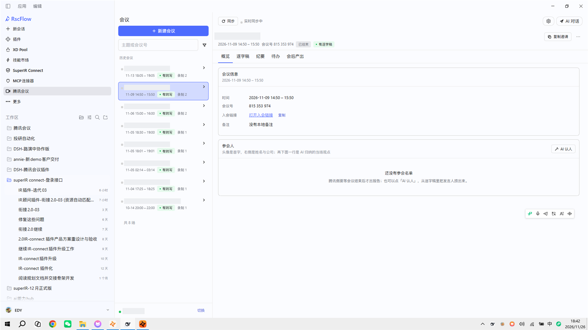
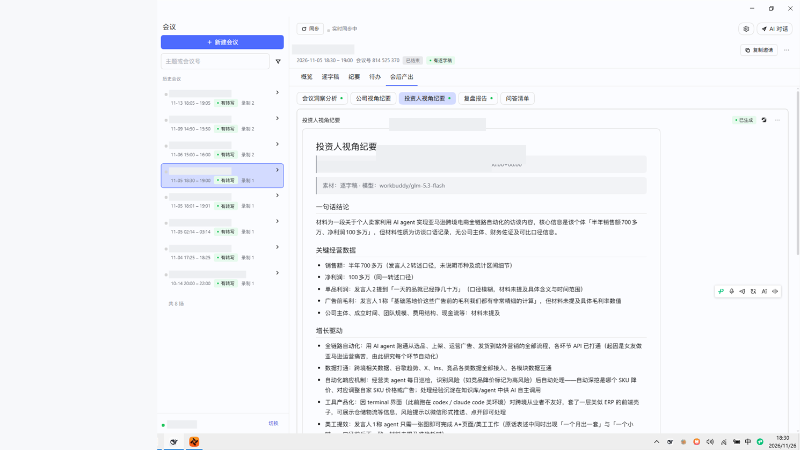
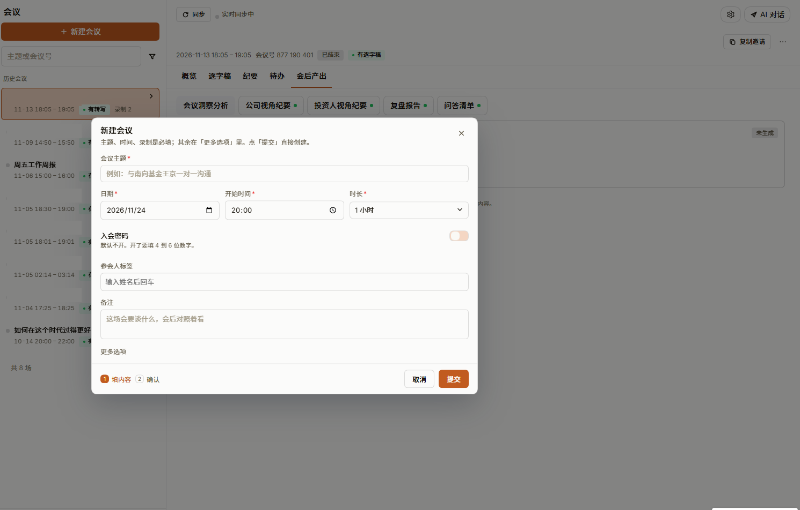

DeepSeek Harness 插件A plugin for DeepSeek Harness
把腾讯会议接进
DeepSeek Harness
Tencent Meeting,
inside DeepSeek Harness
面板里管会议，对话里用工具，会后由你自己配置的模型产出五份文档。 Manage meetings in a panel, drive them from tools in the conversation, and let your own DSH model turn a finished meeting into five documents.
dsh plugin add dsh-tencent-meeting
CLI 不随包分发：面板里点一次「安装会议组件」才会装 @tencentcloud/tmeet@1.1.0，进度可见。
The CLI is not bundled: it is installed automatically on first use, with progress shown in the panel.

What it does能做什么
三件事，覆盖一场会的全过程Three things, across the life of a meeting
所有会议事实都来自腾讯会议官方 CLI，所有生成的文档都来自你在 DSH 里选择的模型或 agent 预设。 Every meeting fact comes from the official Tencent Meeting CLI; every generated document comes from the model or agent preset you configured in DSH.
▤面板里管会In the panel
左栏多一个腾讯会议入口。主页分开进行中、即将开始与历史；点进任意一场，详情页有概览、逐字稿、智能纪要、时间轴、待办与会后产出。建会、改会、取消也在这里。 A Tencent Meeting icon in the DSH sidebar. Home separates in-progress and upcoming from history; each meeting opens a detail page with overview, transcript, smart minutes, timeline, todos and outputs. Creating, editing and cancelling happen here too.
⌘对话里管会In the conversation
14 个 tm_* 工具已注册进 DSH：列会、搜会、读详情、建会、改会、取消、取纪要，不用离开聊天窗口。指认某场会，会议 ID 或 9 位会议号都可以。
Fourteen tm_* tools are registered with DSH — list, search, read, create, update, cancel and minutes retrieval. Identify a meeting by its ID or by its 9-digit code.
✦会后五份产出After the meeting
会议洞察分析、公司视角纪要、投资人视角纪要、复盘报告、问答清单。素材优先逐字稿，其次腾讯智能纪要；两者都没有就停下并说明，不会只凭标题编一份。 Five documents on demand: meeting insight, company-view minutes, investor-view minutes, review report and Q&A list. Transcript first, smart minutes second; with neither, generation stops and says why.
Screens界面
界面即功能The interface is the feature

一场会的材料，一次看全All of a meeting's material, in one place
逐字稿、智能纪要、时间轴、待办、会后产出都在详情页。没有录制或转写时如实提示原因，而不是拿标题凑一份内容。 Transcript, smart minutes, timeline, todos and outputs live on the detail page. When there is no recording or transcript it says why, instead of filling the gap with the title.
- 素材优先逐字稿Transcript first
- 其次智能纪要Smart minutes second
- 无素材即停并说明No material, no invention

写操作先预览，确认才提交Writes are previewed before they happen
建会、改会、取消、邀请、改参会人、申请录制权限，都会先把将要发生的事摆出来，你确认才提交。取消不可恢复，确认前会先查出主题、时间、会议号给你核对。 Create, update, cancel, invite, participant edits and recording-permission requests all show what is about to change; nothing reaches Tencent Meeting until you confirm. Cancelling cannot be undone, and the confirmation shows the subject, time and meeting code first.
Why it holds up为什么值得用
四条，都是能验证的Four claims you can verify
01写操作先预览后确认Preview-first writes
写工具都收 confirm，不给就不动作；只读工具声明并发安全。
Write tools take confirm and do nothing without it; read-only tools declare concurrency safety.
02不猜It does not fill gaps
拿不到的素材就如实说拿不到：不补数字、不编结论；投资人视角纪要做归纳，不给投资建议。 Missing material is reported as missing — no invented figures, no fabricated conclusions. Investor-view minutes summarise; they do not advise.
03凭证边界写在明处Explicit credential boundaries
不读、不复制、不打印 ~/.tmeet 下任何文件；登录交给 CLI，只转发授权链接；会议数据只发给你配置的模型供应商，且只在你按生成的那一刻。
Never reads, copies or prints anything under ~/.tmeet; sign-in stays with the CLI and only the authorisation link is relayed. Meeting data reaches only the model provider you configured, and only when you generate.
04一层薄封装，读完不费劲A thin shell, easy to read
不打包 cordis、schemastery、dsh-tools（走宿主的 peerDependencies），也不在磁盘上存会议镜像。
No bundled cordis, schemastery or dsh-tools (host peer dependencies), and no meeting mirror written to disk.
Setup上手
两步，大约两分钟Two steps, roughly two minutes
装插件，重启 DSHInstall the plugin, restart DSH
运行上面的 dsh plugin add，重启后左栏出现腾讯会议图标，设置里出现「腾讯会议」一节。
Run dsh plugin add above and restart. A Tencent Meeting icon appears in the sidebar and a section appears in settings.
打开面板，授权Open the panel, authorise
首屏只有一个「去授权」按钮；点它，浏览器里完成 OAuth 设备码授权即可。 The first screen shows a single Authorise button. Press it and finish the OAuth device-code flow in the browser.